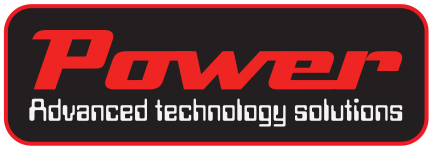
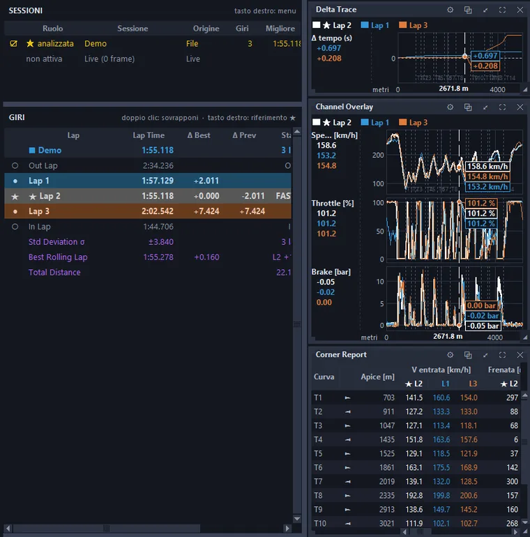
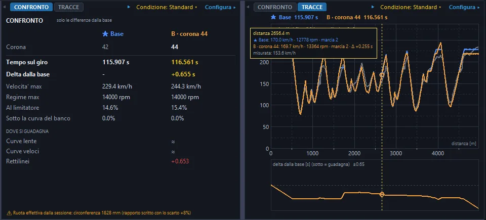
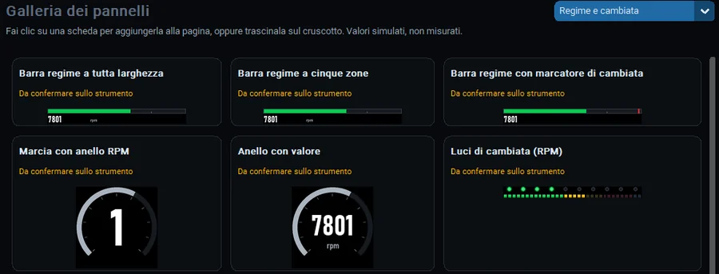
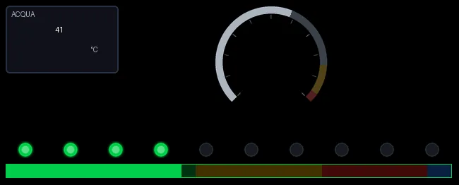
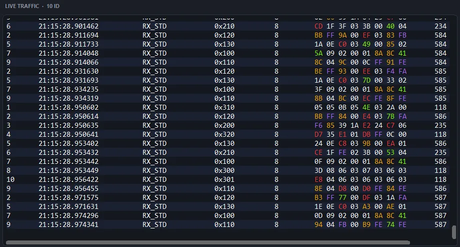
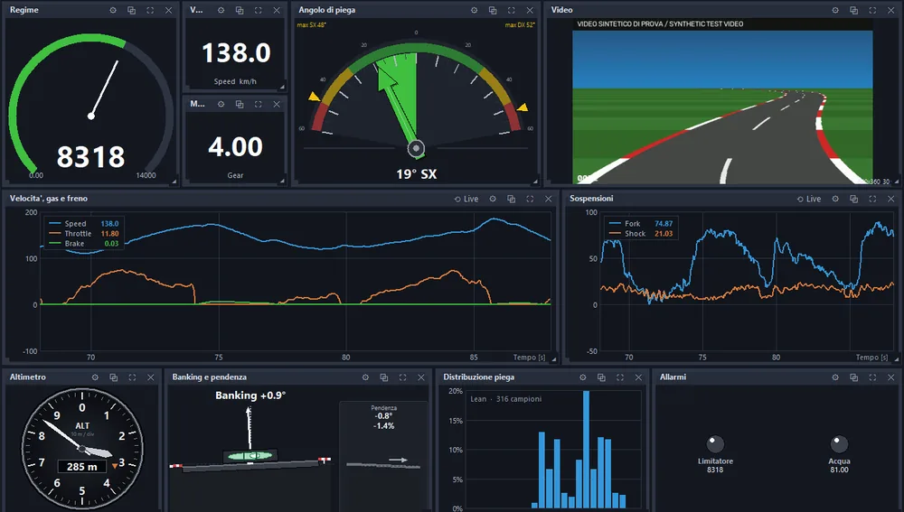

Un unico programma per Windows per leggere una sessione, provare una modifica prima di farla, preparare gli strumenti e seguire i dati mentre la vettura gira.One Windows program to read a session, try a change before making it, prepare your instruments and follow the data while the vehicle runs.
Apri una sessione, sovrapponi i giri e scopri dove si guadagna e dove si perde: tracce, delta e curve scorrono insieme sotto lo stesso cursore.Open a session, overlay your laps and see where time is gained or lost: traces, delta and corners move together under one cursor.

Cambia un valore, per esempio il rapporto finale, e confronta il risultato con la base prima di toccare la vettura.Change a value, such as the final drive, and compare the result with the baseline before touching the vehicle.

Collega uno strumento supportato: il programma lo riconosce, salva una copia di sicurezza della sua configurazione e ne mostra impostazioni e canali. Componi le pagine del display, simula i canali e scarica le sessioni registrate. La galleria dice lo stato di ogni pannello, compresi quelli ancora da confermare sullo strumento.Connect a supported instrument: the program identifies it, saves a backup of its configuration and shows its settings and channels. Build the display pages, simulate channels and download recorded sessions. The gallery states the status of each panel, including those still to be confirmed on the instrument.


Segui il traffico del bus in tempo reale: ogni messaggio con ora, identificativo e byte, con i valori che cambiano evidenziati a colori.Follow bus traffic in real time: every message with time, identifier and bytes, with changing values highlighted in colour.

Componi il tuo cruscotto con indicatori, grafici e un riquadro video in streaming e segui i dati in tempo reale.Build your own dashboard with gauges, charts and a streaming video panel and follow the data in real time.

Schermate del programma con dati dimostrativi, interfaccia in italiano. Il video nel riquadro è generato al computer, non è una ripresa reale.Program screens with demonstration data, Italian interface shown. The video in the panel is computer-generated, not real footage.